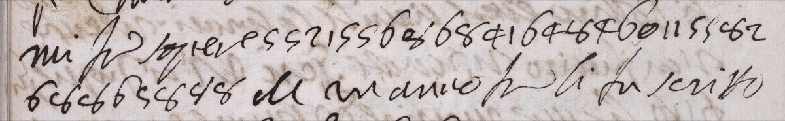
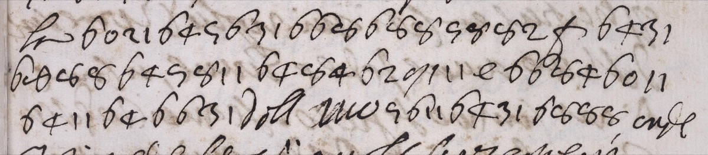
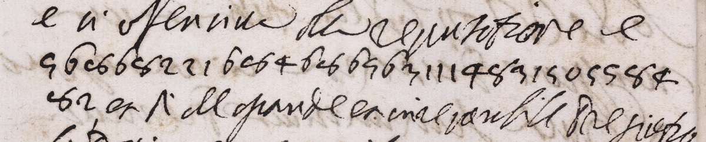

At a glanceKey from adjacent plaintext · partial (about 60% of Cosimo’s groups read as Italian, an estimate)
- The letters
- Cosimo III, Grand Duke of Tuscany, in his own hand to Anton Francesco Montauti, his envoy at the imperial court: 12 letters with cipher runs (13 counting a doubtful one), most dated by day and month only (a year is legible on three of them, 1693). Also four bare cipher passages in secretariat letters of 1694.
- Where
- University of Pennsylvania, Kislak Center: Ms. Codex 533 (Cosimo’s letters); Oversize Ms. Codex 534 (the secretariat’s despatches, ff. 14r, 15r, 21r, 396v interlined; ff. 114r–116v bare); Oversize Ms. Codex 531 f. 4r. Online through Penn’s IIIF images.
- The cipher
- Two-sign groups over the digits and an eleventh sign (a w in the clerks’ hands, a c with a loop in Cosimo’s), one group per letter, a few homophones; some groups look like code numbers for persons.
- How it was deciphered
- Key rebuilt from the recipient’s letter-by-letter decipherments over the secretariat’s cipher in Codex 534, frozen, and tested on an interlined letter it had not seen: 76 of 92 groups (82.6%), against at most 35.9% for 200 shuffled keys. Cosimo’s runs were transcribed twice, one pass blind.
- What it says
- In the first letter (undated) the Elector Palatine has let Cosimo know of a report that his daughter had written asking leave to return home and separate from her husband; Cosimo treats such talk as calumny. Elsewhere: “mia figlia”, a journey to Düsseldorf, the Tuscans at her court, a favourite lady of the bedchamber, the Duke of Savoy.
- Still open
- Five of 35 runs not read and many only in part; code numbers; two key values rest on context only; the clear text around the first letter’s cipher needs a palaeographer.
- Credit
- Montauti or his secretary, whose interlinear decipherments in Codex 534 give the key. Key, test, transcriptions and readings contributed by Andrew Beling, with AI agents; not yet checked by a person.
01 The first letter
An independent reader (a second AI agent, which read the leaves blind before seeing the first agent’s version) puts the letter on ff. 1r–1v of Codex 533 this way:
In an undated letter partly in cipher (after the 1691 marriage), Cosimo III tells his envoy Montauti that the Elector Palatine has let him know of a report, written to the Elector, that Cosimo’s daughter had written to Cosimo asking permission to return home and separate from her husband. Cosimo says such talk shames and offends his and his daughter’s reputation, speaks of ‘such calumnies’, and asks Montauti to use all his skill against it, if need be by a journey to Düsseldorf.
What that does and does not say:
- It is a report at second or third hand that Cosimo passes on and treats as calumny: the Elector tells Cosimo (“mi fa sapere”) that something was written to him (“li fu scritto”), namely that the daughter had written to her father to ask leave.
- There is no explicit denial among the words read. The rejection is carried by “ci fanno vergogna” (they put us to shame), “ci offen[…] … reputatione” and “simili calunnie” (such calumnies).
- Who wrote to the Elector is unread (“un amico”? “del Marchese”? neither secure).
- The letter has no date line. It is later than the marriage of 1691 and earlier than the Elector’s death in 1716; nothing on the page narrows it.
- The clear text at 1r lines 5–6 and 11–13 needs a palaeographer before any of it is quoted, as do 1v lines 1 and 3.

The passage as the verifier gives it; clear text in lower case, cipher (decoded) in capitals, a question mark after a doubtful word, […] unread:
[Signor Dottore?] So che V.S. applicherà? tutto lo? suo maggiore studio? in un negozio che mi sommamente? preme. Mi fa sapere L’EL[E]TTORE PALATINO [d(e)l? un? amico / del March(ese)?] ch[e]? li fu scritto [a Vienna? / giunse?] che la MIA FIGLIA MI HAVEA scritto per domandarmi la PERMISSION[E] [di? / e?] RITORNARE QUA e SEPARARSI dal? [suo? / mio? / uno?] MARITO; onde V.S. vede? bene? [… about 4 words …] mi fa? credere? ch’insinuasse? il Principe e da un intrigo? […] subbietto? una? simile, ci fanno vergogna, […] e ci offen[…] [che? / nella?] reputatione e MIA ET DI MIA FIGL[I]A et? […] grande […] del pregio? di […] e che simili calunnie […] non fussero riportate? Però V.S. ci adopri? tutta la sua maggiore destrezza? e accuratezza?, non risparmiando a veruna fatica, e con ogni efficacia, e così mi voglia d[are] testim[onianza]? del suo amore fedele e sincero […]. Se mai […] bisognio che V.S. per mio servizio facessi un viaggio a Dusseldorf, crederei? che fussi bene che V.S. con scriverli o farli dire del mio sentimento? […] [breaks off]
In English: “[…] I know Your Lordship will give your greatest care to a matter that presses me greatly. THE ELECTOR PALATINE lets me know [through a friend? / of the Marchese?] that it was written to him […] that MY DAUGHTER HAD written to me to ask my PERMISSION TO RETURN HERE and TO SEPARATE from [her?] HUSBAND; so Your Lordship sees […] they put us to shame, […] and it offends […] the reputation both MINE AND MY DAUGHTER’S […] and that such calumnies […] should not be repeated?. So Your Lordship is to use all your greatest skill and care, sparing no effort […]. If it should ever be needed that Your Lordship, for my service, make a journey to Düsseldorf, I would think it well that Your Lordship, by writing to him or having him told of my feeling […]”
How firm the cipher words are. All 85 groups of the seven runs decode to these words. Several letters rest on something less than the tested key, and the repository marks each one: the hooked 5 that looks like a 9 (in mia, havea, marito), one 0 read as 6, an 8-shaped loop read as Cosimo’s w; the values w6 = i and 91 = u, each attested under a Codex 534 interline but not part of the tested key; and two values known from context only, ww = o (in Palatino, permission-, ritornare, marito) and 62 = q (in qua). None of these decides which word is meant: each word is fixed by its other letters. Separarsi needs neither an emendation nor a context value. Cosimo wrote two letters wrong: permissiona and figlea.

Corrections to the first agent’s version, made by the verifier on the image: on 1v line 1 the word before “e MIA ET DI MIA FIGLIA” is “reputatione”, not “Cristoforo”; on 1r line 6 the word before “la MIA FIGLIA” is written like “che”, not “del”; and the opening sentence, “ci fanno vergogna” and the instructions on 1v were newly read. The verifier’s blindness has one stated limit: before reading the images it had opened a key file whose note named “ritornare qua”, “Palatino”, “marito”, “Dusseldorf” and “havea”; “mia figlia”, “permission-”, “separarsi”, “mia et di mia figlia”, “calunnie”, “vergogna” and all the clear text were named nowhere it had looked.

02 The other cipher passages
Codex 533 holds 35 cipher runs in Cosimo’s hand, on 17 leaves. Counted here, 15 read whole (with the marked emendations), 15 in part and 5 not at all. What reads:
- ff. 21r–22r (“Firenze li 23 di Giugno[?]”): “come SONO SODISFATT[I] DEL DUCA D[I] SAVOIA. Io resto” (how they are satisfied with the Duke of Savoy); and a run beginning “[c]onte” with a name not established.
- ff. 28r–29v (“Firenze li 25 d’Ottobre”): “[MIA?] FIGLIOLA”, “CORTE”, “et delli TOSCANI”.
- ff. 35r–35v (“Firenze li 14 […]”): “FUSSI DISGUSTAT[O] DEL […] DELLA CORTE” (was displeased with […] of the court); “Sarò aspettando di vedere se per mezo [D]ELL[A] D[O]N[N]A(?) DI CAMERA FAVORITA DELL[A] [14]” (I shall wait to see whether through the favourite lady(?) of the bedchamber of [14]); donna is a conjecture, and 14 is probably a code number for a person.
- ff. 56r–57r (“Firenze li 19 d’Ottobre”): “MIA FIGLIA”; “a ve(?) viaggi[o] DUSSELDORF”.
- ff. 62r–63v (“Firenze li 23 Settembre”): “LI TEMPI”, “QUALCHE FACILITÀ”.
- Smaller pieces: “COSTÀ” (25r), “RELATION[E] DEL” followed by eight groups in 1–3–9 digits only (26r, perhaps another table), “AGOSTO” (70v).
The same cipher also stands bare, with no decipherment, in four secretariat letters of 1694 signed for the Grand Duke (Codex 534 ff. 114r–116v; Codex 531 f. 4r). They read at about 85–95% by the reader’s estimate, code numbers apart: the Duke of Savoy’s offer of his daughter as a bride for the King of the Romans, Abbot Grimani’s negotiations at Vienna, the Elector of Cologne and the see of Liège, a marriage with a [princess?] of Poland. For example (f. 115r): “Con le notizie della ESIBIZIONE, che si supponeva fatta A COTESTA CORTE DAL [110] DI SAVOIA della sua di Lei FIGLIA per il RE DE’ ROMANI …”.
03 History and significance
What the letters say is given above. What the references establish follows, with its sources; our inference is marked.
The marriage. Cosimo III’s only daughter, Anna Maria Luisa de’ Medici, was married by proxy in Florence on 29 April 1691 to Johann Wilhelm of Pfalz-Neuburg, Elector Palatine; the couple entered Düsseldorf on 19 July 1691 (Casciu 2006, p. 32; Galluzzi 1781, IV, p. 297). Casciu calls the marriage a happy one, resting on real affection (p. 32); there were no children (p. 35). She came back to Florence only as a widow, in 1717 (Casciu, p. 40). The match was bound up with the Emperor’s grant of royal honours to Cosimo in 1691 and with the imperial contributions levied on Tuscany (DBI, “Anna Maria Luisa”; Galluzzi IV, pp. 295–296).
Montauti. Anton Francesco Montauti was Cosimo’s envoy at the imperial court in Vienna until 1699, then Secretary of War (Penn’s record of its Ms. Coll. 180). He was among “her father’s envoys” at the Düsseldorf carnival of February 1697 (Kühn-Steinhausen 1938, p. 72, from the Electress’s letter of 9 February 1697).
A report not in the literature. None of the accounts opened (Casciu, Verga, the two DBI entries, Galluzzi, Kühn-Steinhausen’s 1938 article on the Düsseldorf festivities, the NDB) mentions any wish, request or rumour in the 1690s that the Electress would return to Florence or separate, or any calumny about the couple. Kühn-Steinhausen’s 1938 edition of the Electress’s letters (Düsseldorfer Jahrbuch 40), the likeliest place for an earlier mention, and her 1939 biography were not read; nor was Acton’s The Last Medici, and the Florence State Archive and the Medici Archive Project could not be searched.
Our inference. The letter adds to the literature rather than contradicting it: what it records is a report, which Cosimo treats as calumny, not a fact. Kühn-Steinhausen’s own surmise that the Elector wished to show his father-in-law’s men that the daughter lived happily (1938, p. 72) would fit an answer to such a report; no source makes the link. The cipher of Cosimo’s own letters, as far as it reads, is mostly about his daughter’s household and the persons around her (with a word on the Duke of Savoy), while the secretariat’s cipher in Codex 534 deals with Savoy, Liège, Poland and the imperial court. These are a father’s private instructions about his daughter’s marriage, kept out of the state despatches, in the last generation of the Medici, whose line ended with Cosimo’s children. (That the line ended with them is background not from the sources and was not checked here.)
04 The cipher and its key
In Codex 534 the grand-ducal secretariat wrote some letters to Montauti partly in this cipher, and the recipient wrote the plaintext letter over each group: f. 14r (Dall’Ambrogiana, 30 October 1690), f. 15r (20 November 1690), f. 21r (5 December 1690) and a few lines of f. 396v. From these the key was rebuilt: 22 groups for 19 letters, with two groups each for a, e and o, every pair listed with its folio and line. The eleventh sign is a digit in its own right (5w = n, 6w = t, w2 = a, w4 = e, 4w = f). Names are spelled out letter by letter (“signor Elettor Palatino”); a few groups with no letter value (in Codex 534: 10, 110, 104, 106, 116 and others) look like code numbers for persons or titles.
Cosimo writes the same groups in his own hand, the w as an open c joined to a loop; that he used the secretariat’s table is inferred from the Italian it gives, since no interlined autograph letter was found. Two values were added after the test from single interlines (w6 = i, f. 396v; 91 = u, f. 21r) and two from context alone (ww = o, 62 = q); the context values are kept in a separate file and every reading that uses them is marked. No q, j, x, y or k is attested under an interline.
05 How it was checked
- A key from f. 14r alone was frozen before an earlier test on four interlined segments of f. 15r: 39 of 39 groups agreed, shuffled keys at most 28.2%. The reader knew the key while reading the interline, so this test is not clean.
- The clean test: the key from ff. 14r and 15r was frozen; f. 21r, not used for the key, was transcribed from crops with the faint interline blanked out and the transcription frozen before the interline was transcribed. 76 of 92 covered groups agree with the interline (82.6%); 200 keys with the same values shuffled reached at most 35.9% (mean 23.9%). The misses are misreadings of the clerk’s digits; the alignment step raises the shuffled baseline. Both tests check the secretariat’s table, not Cosimo’s hand.
- Cosimo’s runs were transcribed twice: forward by an agent that knew the key, and backward by a separate agent with no key and no earlier transcription. They agreed on 704 of pass B’s 811 signs; all 116 points of difference were checked on full-size images, 112 settled and four (on one line of f. 35v) left open, and the result frozen.
- The repository’s statistical validation of the reading (Cosimo’s runs and the bare 1694 passages together) passes.
- A second AI agent read the first letter blind from the images and froze its reading before opening the first one; it confirmed the cipher transcription (one sign left open, no word affected) and every cipher word, and corrected the clear text. No person has checked the readings.
06 What remains uncertain
- About 60% of Cosimo’s groups read as Italian; that figure is an estimate (40% of the 403 groups lie in runs read whole; 318 of the 401 groups in the decode, 79%, take a letter value).
- Runs not read: 19r (perhaps a plain number), 25r (two runs), 26r (a short run), 36r. The block of eight groups on 26r has no w-sign and looks like a different table.
- Code numbers without a value: 14 in Codex 533; 10, 13, 22, 27, 30, 39, 90, 104, 106, 110, 116 in the 1694 passages.
- ww = o and 62 = q rest on context only. Penn’s Ms. Coll. 180, Folder 114 (“Documents with code for diplomatic ciphers, 1689, 1694”) was not seen and would confirm the table.
- Dates: Cosimo writes place, day and month; a year is legible on only three cipher letters (1693), and the first letter has no date line.
- Four of the 116 transcription disagreements (f. 35v, one line) are left open.
- The clear text of Codex 533 is transcribed only around the runs and on ff. 1r–1v, and needs a palaeographer.
- About fifty pages of bare cipher in Codex 534 ff. 1–113 were not attempted.
07 Sources
- University of Pennsylvania Libraries, Kislak Center: Ms. Codex 533, IIIF manifest, ff. 1r–1v, 3r, 19r, 21v, 22r, 25r, 26r, 28v, 35r–35v, 36r, 53r, 56r, 57r, 63r, 70v; Oversize Ms. Codex 534, IIIF manifest, ff. 14r, 15r, 21r, 396v (interlined), 114r–116v (bare); Oversize Ms. Codex 531, IIIF manifest, f. 4r. Rights statement in the manifests: No Copyright – United States.
- N. P. Zacour and R. Hirsch, Catalogue of Manuscripts in the Libraries of the University of Pennsylvania to 1800 (Philadelphia, 1965), pp. 187–188, 226 (cited from Penn’s record).
- Stefano Casciu, “‘Principessa di gran saviezza’. Dal fasto barocco delle corti al Patto di famiglia”, in Casciu (ed.), La principessa saggia (Livorno, 2006), pp. 30–57.
- Marcello Verga, “Strategie dinastiche e mito cittadino: l’Elettrice Palatina e Firenze”, same volume, pp. 24–29.
- Elvira Gencarelli, “Anna Maria Luisa de’ Medici”, Dizionario Biografico degli Italiani 3 (1961); Elena Fasano Guarini, “Cosimo III de’ Medici”, DBI 30 (1984).
- Riguccio Galluzzi, Istoria del granducato di Toscana, vol. IV (Florence, 1781).
- Hermine Kühn-Steinhausen, “Die Feste am Düsseldorfer Hofe nach Briefen der Kurfürstin Anna Maria Luise”, Düsseldorfer Heimatblätter 7 (1938), pp. 68–73.
- Max Braubach, “Johann Wilhelm”, Neue Deutsche Biographie 10 (1974), pp. 516–518.
Both transcriptions and the settled disagreements, the frozen keys with the source of every value, the context-only values, both tests, the readings run by run, the bare 1694 passages and the verifier’s record are in targets/montauti1692/.